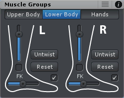
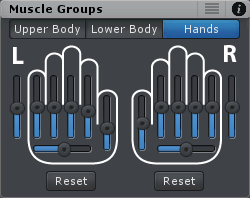
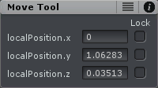
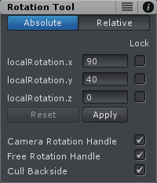
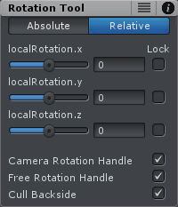
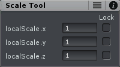

Tool Assistant
The Tool Assistant is a small window that is displayed in the last or currently selected Scene View. It is available for the move, rotate and scale tool and supplements the tools with additional information and settings. If the current UMotion project is of type humanoid the Muscle Groups assistant is displayed if no bones/transforms are selected. The Tool Assistant can be enabled and disabled from the Displays section in the Pose Editor.
The position of the Tool Assistant window can be chosen freely by dragging it to the desired location within the Scene View.
Muscle Groups Assistant
The Muscle Groups Assistant is visible in humanoid projects when no bones/transforms are selected. The Muscle Group Assistant is split into 3 tabs:

Muscle Groups - Upper Body |

Muscle Groups - Lower Body |

Muscle Groups - Hands |
Features
- Each slider controls multiple humanoid muscles at the same time thus allowing faster and more convenient pose editing.
- The reset buttons set the related humanoid muscles either to the "Reference Pose" or to the last keyed pose ("Reset Modifications").
Lower Body - Tab
- For some models it might be necessary to use the Untwist button to ensure that the legs bend nicely when the leg-stretch slider is used.
- The checkboxes can be used for "pinning" the ankle or the toes to the ground. This is useful to let the character crouch or roll over its toes.
- In FK mode, "pinning" is achieved by moving the hips in such a way, that the pinned body part stays at the same place.
- If Inverse Kinematics is used "foot rolling" is achieved by moving the IK handle in such a way, that the toes stay at the same place.
- Please note that the leg (stretch) slider is not available in IK mode. To make the character crouch when using IK, make sure that the IK Handles are pinned (see IK Pinning) and simply moving the hips down.
Tip: Enable Mirror Editing to edit both sides at the same time when using the Muscle Groups Assistant.
Move Tool Assistant
The Move Tool Assistant displays the current local or global position of the selected bone/transform depending on the current Pivot mode.
Move Tool Assistant
Features
- The input fields can be used to edit the position values of each axis.
- When left clicking and dragging on the label next to the input field, it is possible to smoothly adjust the value. ESCAPE aborts the dragging and reverts changes to the original value.
- The check boxes on the right can be used to lock an axis. This will disable the handle for that axis in the Scene View and makes the input field read only.
Rotate Tool Assistant
The Rotate Tool Assistant displays the current local or global rotation of the selected bone/transform depending on the current Pivot mode. The rotation is always displayed in Euler angles even when the rotation mode is quaternion based.
| 
Rotate Tool Assistant - Absolute |

Rotate Tool Assistant - Relative |
Relative Mode
Makes it easy to rotate a bone/transform relative to it's current rotation. Correctly rotates the bone/transform even if it's in a Gimbal Lock. The sliders next to the input fields can be used to smoothly adjust the rotation value of each axis. As with all sliders in the UMotion UI ESCAPE aborts the dragging and reverts changes to the original value.
Absolute Mode
Can be used to set the selected bone's/transform's rotation to a desired euler angle. After inputing the euler angles, it is required to hit the "Apply" button.
It's worth noting that after applying a rotation, it can happen that all 3 values update and show different values. This can happen if the passed euler angle resulted in a Gimbal Lock. The new values result in the exact same orientation in 3D space.
If the selected bone's rotation property is using the euler interpolation mode, the euler values should be directly changed via the Channels View.
Other Features
- The check boxes on the right can be used to lock an axis. This will disable the handle for that axis in the Scene View and makes the input field read only.
- The Camera Rotation Handle can be enabled or disabled. It is the outer white ring of the rotation handle and can be used to perform a rotation in the current camera space.
- The Free Rotation Handle can be enabled or disabled. It is the inner white ring of the rotation handle and can be used to freely rotate in all directions.
- The Backside Culling can be enabled or disabled. When enabled, the backside of the rotation handles of the rotation axis (red, green and blue) are culled.
Scale Tool Assistant
The Scale Tool Assistant displays the current local scale of the selected bone/transform.
Scale Tool Assistant
Features
- The input fields can be used to edit the scale values of each axis.
- When left clicking and dragging on the label next to the input field, it is possible to smoothly adjust the value. ESCAPE aborts the dragging and reverts changes to the original value.
- The check boxes on the right can be used to lock an axis. This will disable the handle for that axis in the Scene View and makes the input field read only.